SYDE 671 Assignment 2
PART 1: Fun with Filters
PART 1.1: Convolutions From Scratch
I wrote two different implementations of 2D convolutions. The first one uses four for-loops. The two outer loops iterate through the rows and columns of the input image, "sliding" across every pixel. The two inner loops iterate through the rows and columns of the kernel, multiplying its values with those of the image. Prior to convolving, the input image is padded with zeros around the borders. The amount of padding on each axis is one less than the size of the kernel on that axis. The kernel is then flipped along each axis, and convolved such that it is always contained within the bounds of the padded image. This produces an output image with the same dimensions as the original (i.e. not padded) input image.
Here is the implementation using four for-loops:
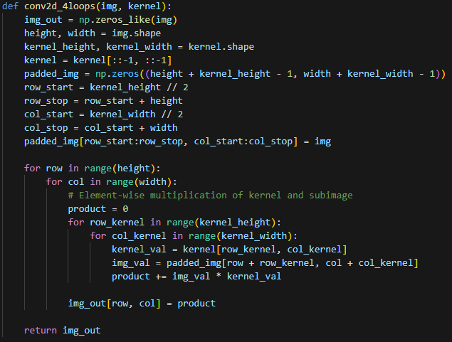
The second implementation uses just two loops. Like before, they iterate through the image pixels. Instead of having additional inner loops, the kernel is directly multiplied with the sub-image it overlaps. This is possible because of numpy's element-wise multiplication operation for arrays. The boundaries and zero-padding are handled the same way as before.
Here is the implementation using two for-loops:
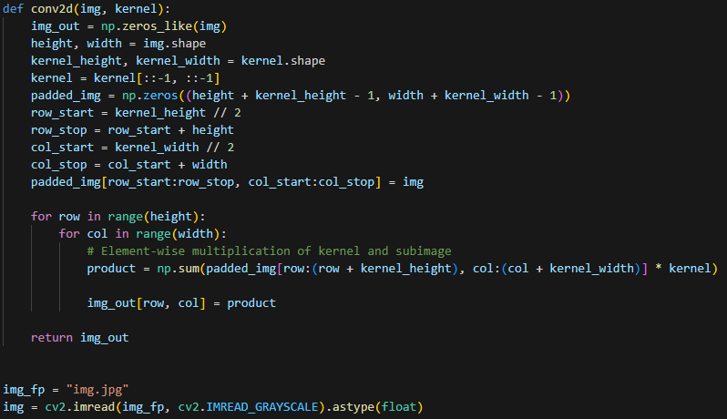
I compared my two implementations with the function scipy.signal.convolve2d. I measured the runtime of 9x9 convolutions with a grayscale picture. As shown in the results below, the two-loop implementation ran faster than the four-loop version. This is expected, as the numpy array multiplication implementations are more optimized than manual iteration. The scipy function was the fastest of the three.
| Function | Runtime (seconds) |
|---|---|
| My 4-loop function | 2.704 |
| My 2-loop function | 0.546 |
| scipy.signal.convolve2d | 0.013 |
Here is the image I used for testing:
The output of each 9x9 convolution is shown below. The 4-loop version is on the left, the 2-loop version in the middle, and the scipy function on the right. The image was converted to grayscale prior to convolution.
| 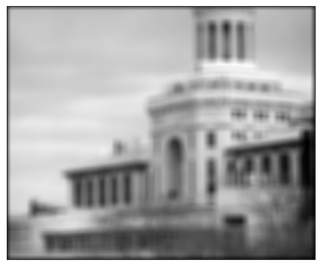 |
 |
 |
As you can see, all three convolution functions produce the same output. Now below is what the output looks like for the finite difference operators Dx (left) and Dy (right):
 |
 |
PART 1.2: Finite Difference Operator
Here is the cameraman image (left) convolved with Dx (middle) and Dy (right):
| 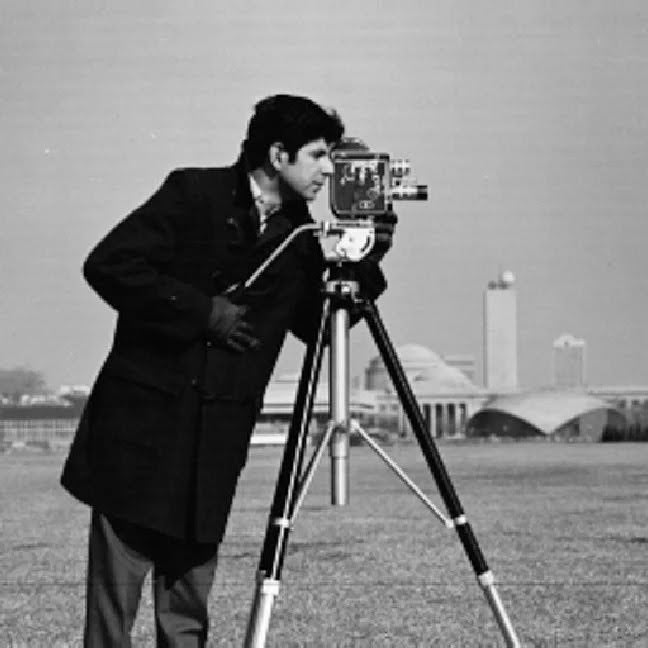 |
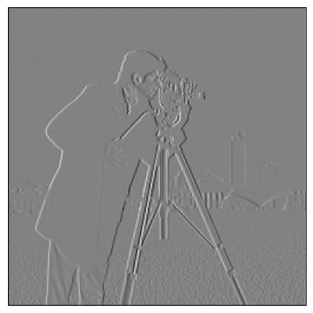 |
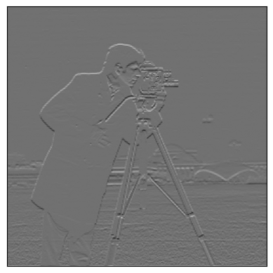 |
Below is the gradient magnitude, computed as the root sum of squares of the x and y gradients.
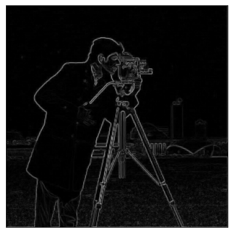
Below is the binarized gradient magnitude, using a threshold of 50 obtained through manual tuning. There is some noise seen as white dots, but further increasing the threshold would cause some edges along the man's leg to be lost.
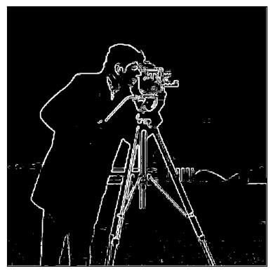
PART 1.3: Finite Difference Operator
To blur the image, I created a 7x7 gaussian kernel with a standard deviation of one using the function scipy.signal.convolve2d and the outer product. After convolving the gaussian with the image, I repeated the procedure in Part 1.2 to obtain the following edge image:
There is less noise thanks to the smoothing from the gaussian blur. Note that I retuned the binarization threshold, settling on a value of 45. However, thanks to the gaussian filter, I was able to obtain a better balance of reducing noise and maintaining desired edges.
I convolved the guassian kernel with Dx (left) and with Dy (right) to obtain the following Derivative of Gaussian (DoG) filters:
| 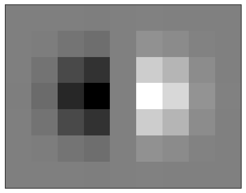 |
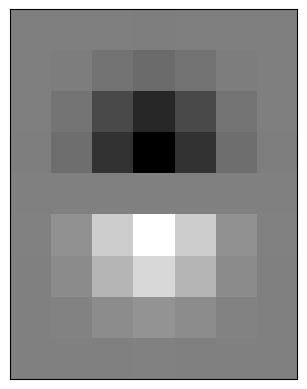 |
The DoG filters for the blur and finite difference steps of the procedure to be combined. Below is the result I obtained by convolving the DoG filters and then following the rest of the procedure as before. As expected, the resulting edge image looks the same.
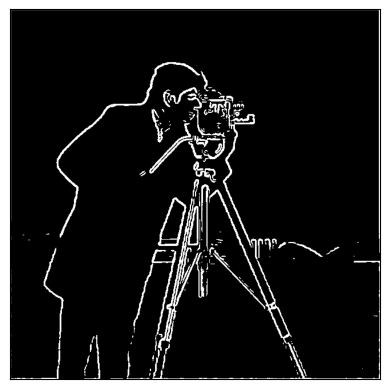
Bells and Whistles
I computed the gradient orientation as the arctangent of the ratio of the Y and X gradients. A positive gradient purely in the positive X direction (right) maps to an angle of zero degrees. In the positive Y direction (downward) it would be 90 degrees In other words, the gradient orientation is measured from the horizontal axis and is positive in the clocwise direction. I visualized these orientations by mapping the angle to matplotlibs hsv colormap as shown below.
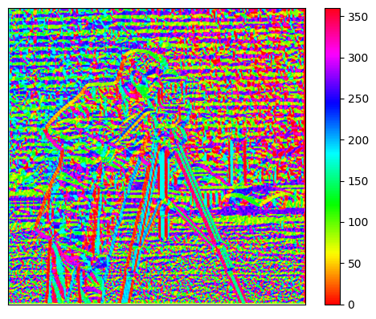
To focus on the orientations of the edges, I masked the above result using the binarized edge image obtained in Part 1.3. The result is shown below, successfully indicating the gradient orientations of the edges.
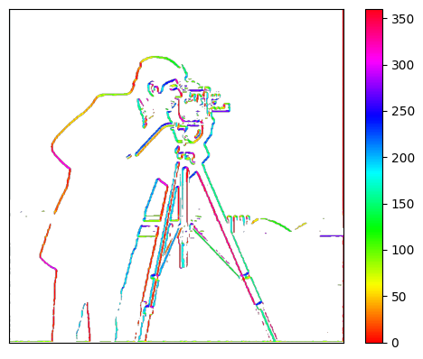
Part 2: Fun with Frequencies
PART 2.1: Image "Sharpening"
I implemented the unsharp mask filter, which makes images appear sharper by increasing the high frequency content. This is achieved in principle by first blurring the original image with a gaussian kernel, which acts as a low-pass filter. The low-pass output is then subtracted from the original image, leaving behind only the high frequencies. These high frequencies are added to the original image, making its finer details more prominent. The high frequencies can be scaled by a constant first, which corresponds to the amount of "sharpening".
To reduce the number of convolutions, I combined the steps into a single kernel. This required the use of the identity kernel, an impulse that simply produces the exact same image it is convolved with. A high pass filter is obtained as the difference between the identity kernel and a gaussian kernel. This is multuplied by the sharpening constant, and then summed with another identity kernel. Convolution with the resulting kernel is equivalent to the previously described unsharp mask procedure.
I picked a sharpening constant of 2 through trial and error and obtained the results below. The sharpened image (right) does indeed appear sharper than the original image (left).
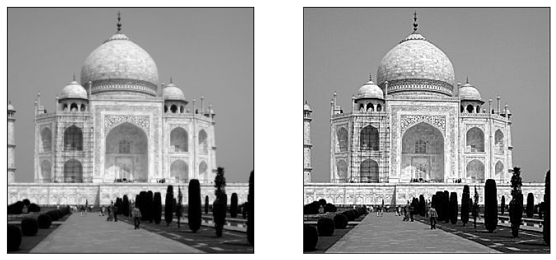
I tried blurring an image with a gaussian and then restoring it using the unsharp mask filter. Below is the blurred image (left), sharpened image (middle), and original (right). The sharpened image looks better then the blurred image. However, it is not as good as the original as it cannot restore the lost information.
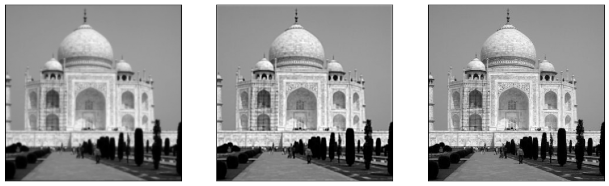
Below is the output using the following sharpening constants: 1 (left), 2 (middle), and 3 (right). A value of two looks best to me, as too much sharpening starts to look noisy.
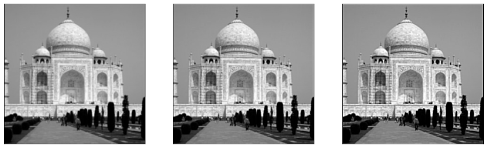
PART 2.2: Hybrid Images
I implemented hybrid images by combining the low frequenices of one image with the high frequencies of another. The low frequencies were obtained by convolving with a gaussian kernel. The high frequencies were obtained by convolving with the same gaussian kernel, and subtracting the result from the original image. After experimenting with different gaussians, I found good results using a standard deviation of three, corresponding to a low-pass filter cutoff frequency of 0.044 cycles/sample. This let me see the high-frequency image up close to my screen, and the low frequency image from a moderate but not inconvenient distance away.
Here are the original two images I used:
 |
 |
Here they are with their faces aligned:
Below are the fourier transform log magnitudes for the image of the man (left) and the cat (right): Frequency increases with distance from the center of the plots.
| 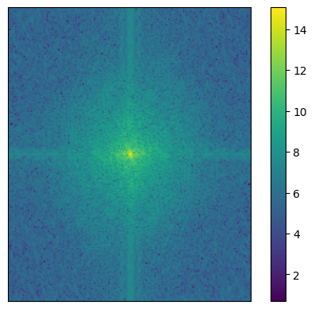 |
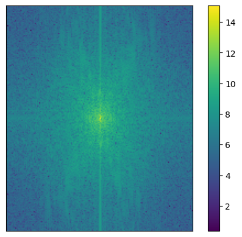 |
Below are the fourier transform log magnitudes after low-pass (left) and high-pass (right) filtering. Much of the high frequencies have been removed from the man's face as seen from the regions far from the center of the left plot. As for the cat, the right plot shows that the low frequencies are now longer that much more prominent than the high frequencies.
| 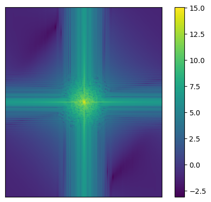 |
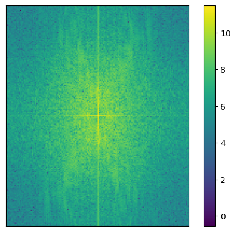 |
Here is the final hybrid. You can see a cat's face up close, and a man's face from a distance.
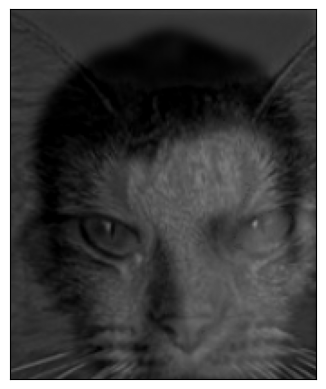
Here is another example. On the left are the two original images. On the right you can see me frowning up close, or smiling from a distance
| 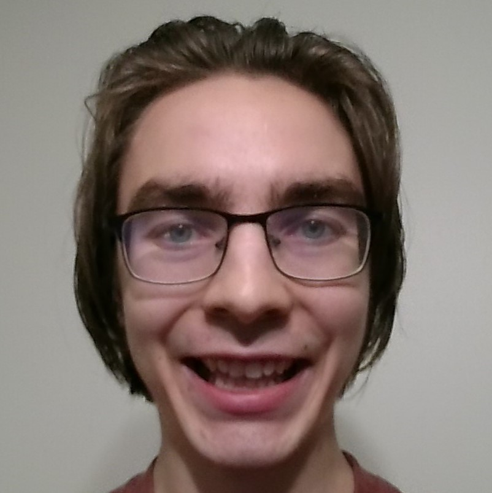 |
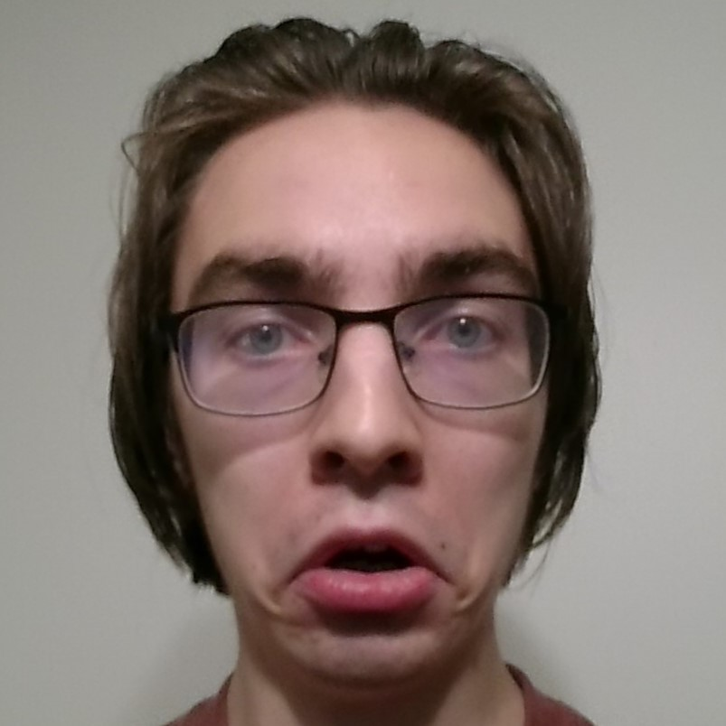 |
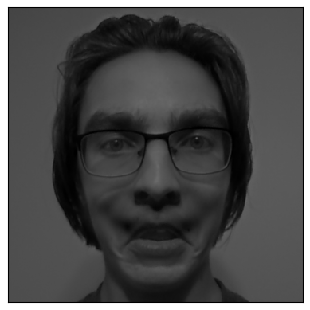 |
Bells and Whistles
I experimented with colour, applying the low and high pass filters to all three channels of each RGB image. Additionally, I tried keeping one of the images in grayscale while proccessing the other in colour. The results are below with both images in colour (left), only the high frequency image in colour (middle), and only the low frequency image in colour (right).
| 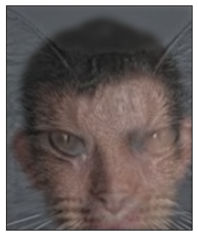 |
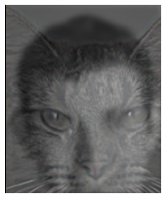 |
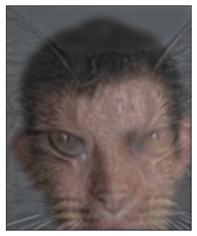 |
As seen in the leftmost result, the colours of the low frequency image appear to dominate. Thus, the middle result using colour only for the high frequency image seems to give the most balanced result, adding a subtle touch to the close-up view of the cat.
PART 2.3: Guassian and Laplacian Stacks
I implemented gaussian and laplacian stacks which will later be used for multi-resolution blending. The gaussian stack is created by repeatedly applying a gaussian filter. Then, each level of the laplacian stack is obtained as a difference of levels of the gaussain stack. Note that I did this all in colour to satisfy the upcoming Bells and Whistles component.
Here are the 6-level gaussian stacks for the apple (left column) and orange (right column). The level increases with each row, successively becoming more blurred.
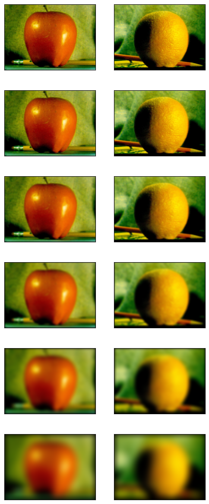
Here are the the laplacian stacks. Again, the level increases with each row, giving the difference between the corresponding and next gaussian stack levels. The last level is simply set to the gaussain stack's last level since there is no next level to subtract.
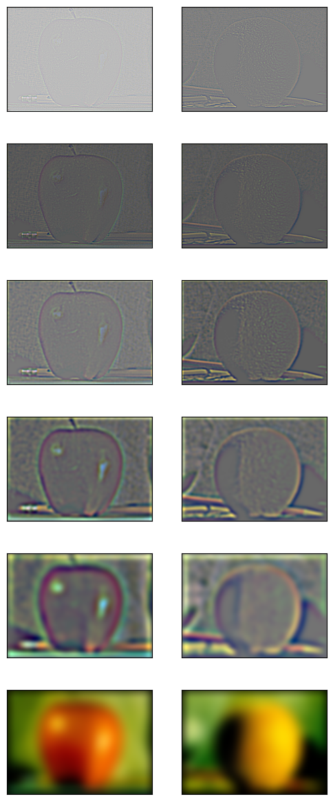
Below is a recreation of Figure 3.42 in Szelski (Ed 2) page 167. The two leftmost columns show every other level of the laplacian stacks, as well as the original images in the bottom row. Note that the rightmost column of multiresolution splines is obtained from the upcoming Part 2.4. The brightness of the laplacian stack images have been scaled to improve contrast. Slight differences between my figure and the original figure may be caused by differences in this contrast adjustment.
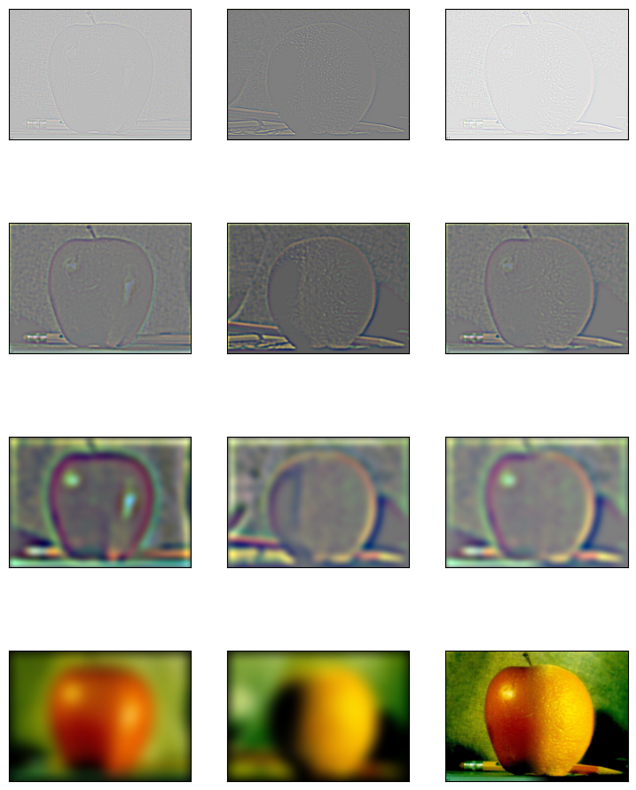
PART 2.4: Multiresolution Blending
Multiresolution blending is accomplished by stitching together each level of the laplacian stacks for two images. A mask is used to split the output image into two regions (e.g. left and right halves), each corresponding to one of the two input images. Since I am using stacks instead of pyramids, I use a mask with a soft, blurry edge. My result for the orange and apple is shown below.
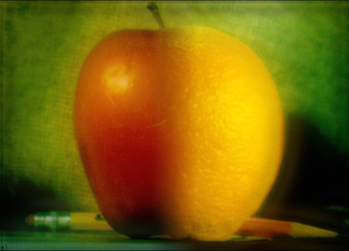
Here is another example, with the two original images on the left, and the blended image on the right.
| 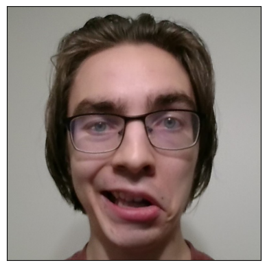 |
Here is an example using a circular mask shown on the left.
| 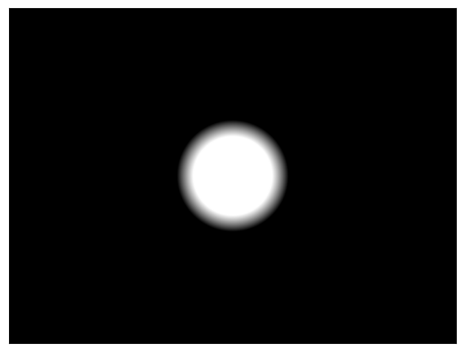 |
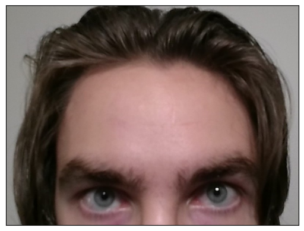 |
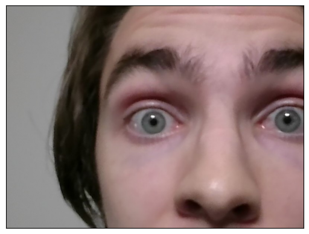 |
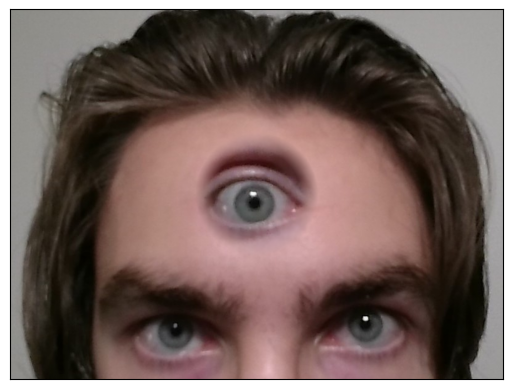 |
Bells and Whistles
I create my gaussian stacks by applying gaussian blurs to all three colour channels. Since the laplacian stacks and blended images are derived from gaussian stacks, they too maintain the three colour channels. As a result, you get to see all my images in Parts 2.3 and 2.4 in colour!